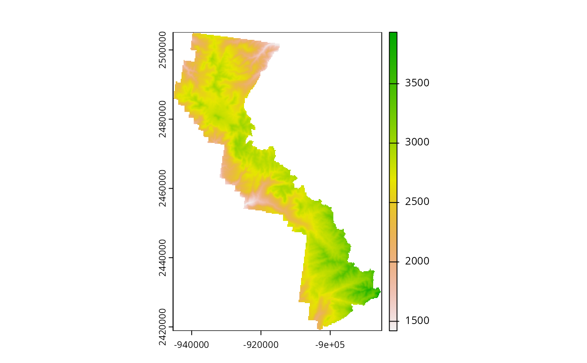
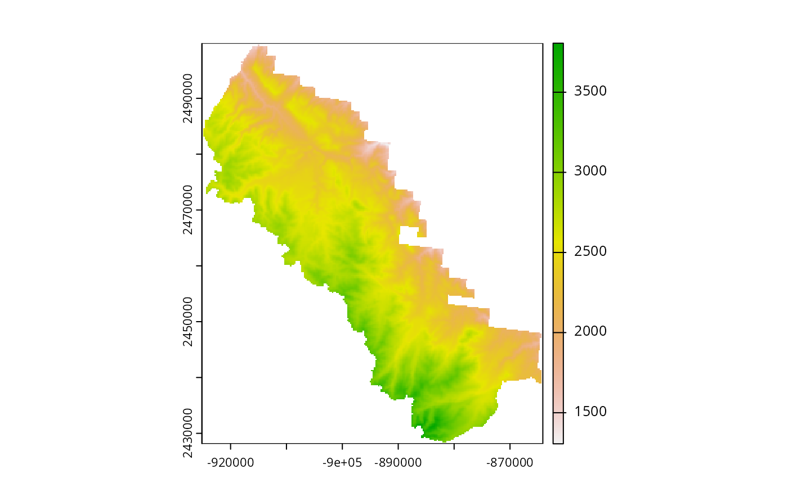
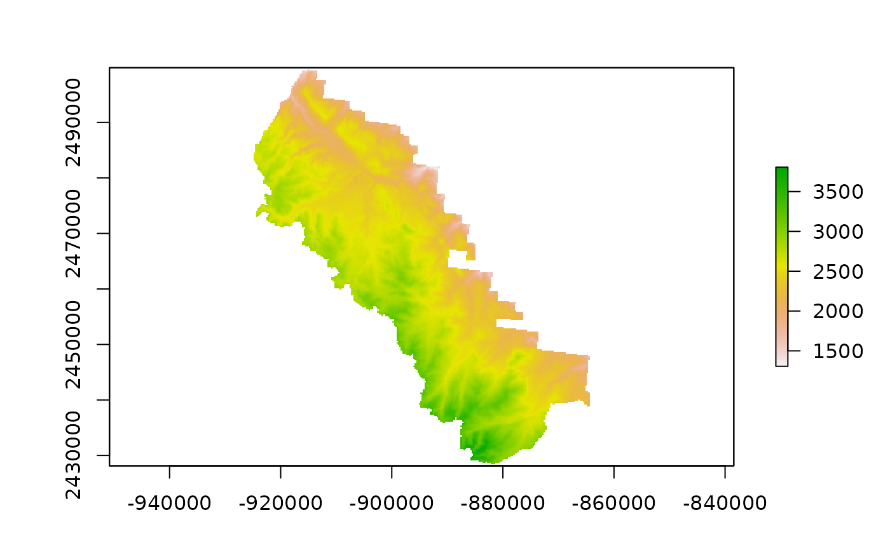

spClipRast.RdSubsets a raster to the extent or masked boundary of a spatial polygon object or shapefile (*.shp), with option to write the new file to the outfolder with specified format (fmt).
spClipRast(
rast,
rastfolder = NULL,
clippolyv,
clippolyv_dsn = NULL,
clippolyv.filter = NULL,
rast.crs = NULL,
bands = NULL,
NODATA = NULL,
buffdist = NULL,
maskByPolygons = TRUE,
showext = FALSE,
fmt = "HFA",
compress = NULL,
outfolder = NULL,
outfn = "rastclip",
outfn.pre = NULL,
outfn.date = FALSE,
overwrite = FALSE
)String or Raster. Raster name, including extension. Option to include full path.
String. Name of the raster folder. Optional.
SpatialPolygons class R object or String. Name of the polygon spatial layer to use for clipping.
String. The data source name (dsn; i.e., pathname or database name) of clippolyv. The dsn varies by driver. See gdal OGR vector formats (https://www.gdal.org/ogr_formats.html). Optional if polyv_layer is an R object.
String. Filter to subset clippolyv spatial layer.
EPSG code or PROJ.4 string. Defined coordinate reference system if rast has no crs defined.
Numeric vector. If rast is a multi-layer raster and only 1 or some layers are desired, specify layer number(s) in a vector format. If NULL, all layers are summed.
Number. The NODATA value for background values. If NODATA is NULL, and a NODATA value is defined on the input raster, the default is the defined NODATA value, else it is defined based on its datatype (see DEFAULT_NODATA for default data values).
Number. The distance to buffer the polygon before clipping raster, in units of raster.
Logical. If TRUE, rast is clipped to boundary of polygon. If FALSE, rast is clipped to extent of polygon.
Logical. If TRUE, layer extents are displayed in plot window.
String. Format for exported raster. Default is format of unput raster. ("raster", "ascii", "SAGA", "IDRISI", "CDF", "GTiff", "ENVI", "EHdr", "HFA", "VRT"). VRT is a virtual raster (See note below).
String. An optional compression type ('LZW', "DEFLATE', "PACKBITS').
String. The output folder.
String. Name of output data file. If NULL, default is 'rastclip'. If no extension, a default is provided to match output format.
String. Add a prefix to output name (e.g., "01").
Logical. If TRUE, add date to end of outfile (e.g., outfn_'date'.csv).
Logical. If TRUE, overwrite files in outfolder.
Spatial S4 object. A clipped raster file.
The clipped raster is written to outfolder with specified format or same format as input raster.
Use spClipRast() to prompt for input.
If the projection of polyv is different than the projection of rast, the polyv SpatialPolygons object is converted to the projection of rast (See note about on-the-fly projection conversion).
On-the-fly projection conversion
The spTransform (rgdal) method is
used for on-the-fly map projection conversion and datum transformation using
PROJ.4 arguments. Datum transformation only occurs if the +datum tag is
present in the both the from and to PROJ.4 strings. The +towgs84 tag is used
when no datum transformation is needed. PROJ.4 transformations assume NAD83
and WGS84 are identical unless other transformation parameters are
specified. Be aware, providing inaccurate or incomplete CRS information may
lead to erroneous data shifts when reprojecting. See spTransform help
documentation for more details.
VRT format Virtual raster format is a pointer to a temporary file, commonly used as an intermediate step between processes. The VRT format ignores option to maskByPolygons.
# \donttest{
# Get polygon vector layer from FIESTA external data
WYbhdistfn <- system.file("extdata",
"sp_data/WYbighorn_districtbnd.shp",
package = "FIESTA")
WYbhdist <- FIESTA::spImportSpatial(WYbhdistfn)
WYbhdist
#> Simple feature collection with 3 features and 4 fields
#> Geometry type: POLYGON
#> Dimension: XY
#> Bounding box: xmin: -108.0056 ymin: 44.01989 xmax: -106.8408 ymax: 45.00134
#> Geodetic CRS: NAD83
#> REGION FORESTNUMB DISTRICTNU DISTRICTNA
#> 1 02 02 03 Medicine Wheel Ranger District
#> 2 02 02 01 Powder River Ranger District
#> 3 02 02 06 Tongue Ranger District
#> geometry
#> 1 POLYGON ((-107.6484 44.9788...
#> 2 POLYGON ((-106.9407 44.4999...
#> 3 POLYGON ((-107.6296 44.9795...
# Get raster layers from FIESTA external data
demfn <- system.file("extdata",
"sp_data/WYbighorn_dem_250m.img",
package = "FIESTA")
raster::plot(raster::raster(demfn))

# Clip raster to district = '03'
dem03 <- spClipRast(rast = demfn,
clippolyv = WYbhdistfn,
clippolyv.filter = "DISTRICTNU == '03'",
overwrite = TRUE,
outfolder = tempdir())
#> filter removed 2 records: DISTRICTNU == '03'
#> /private/var/folders/c6/3mlbrgp57ls3_xf43cjzfp0c0000gn/T/Rtmpki1psw/temp_libpath854d29de02fb/FIESTA/extdata/sp_data/WYbighorn_dem_250m.img
#> reprojecting layer...
#> from: NAD83
#> to: +proj=aea +lat_0=23 +lon_0=-96 +lat_1=29.5 +lat_2=45.5 +x_0=0 +y_0=0 +datum=NAD27 +units=m +no_defs
#> rast is not completely contained within clippolyv
#> ...intersection of 49.956%
#> Warning: NOT UPDATED FOR PROJ >= 6
#> Initializing destination raster...
#> Clipping to polygon layer...
#> ================================================================================
#> clipRaster output written to: /private/var/folders/c6/3mlbrgp57ls3_xf43cjzfp0c0000gn/T/RtmpMIcT7h/rastclip.img
raster::plot(raster::raster(dem03))

# Clip raster to district = '06'
dem06 <- spClipRast(rast = demfn,
clippolyv = WYbhdistfn,
clippolyv.filter = "DISTRICTNU == '06'",
overwrite = TRUE,
outfolder = tempdir())
#> filter removed 2 records: DISTRICTNU == '06'
#> /private/var/folders/c6/3mlbrgp57ls3_xf43cjzfp0c0000gn/T/Rtmpki1psw/temp_libpath854d29de02fb/FIESTA/extdata/sp_data/WYbighorn_dem_250m.img
#> overwriting /private/var/folders/c6/3mlbrgp57ls3_xf43cjzfp0c0000gn/T/RtmpMIcT7h/rastclip.img...
#> reprojecting layer...
#> from: NAD83
#> to: +proj=aea +lat_0=23 +lon_0=-96 +lat_1=29.5 +lat_2=45.5 +x_0=0 +y_0=0 +datum=NAD27 +units=m +no_defs
#> rast is not completely contained within clippolyv
#> ...intersection of 42.117%
#> Warning: NOT UPDATED FOR PROJ >= 6
#> Initializing destination raster...
#> Clipping to polygon layer...
#> ================================================================================
#> clipRaster output written to: /private/var/folders/c6/3mlbrgp57ls3_xf43cjzfp0c0000gn/T/RtmpMIcT7h/rastclip.img
# Plot extracted values of national forest district
raster::plot(raster::raster(dem06))

# }